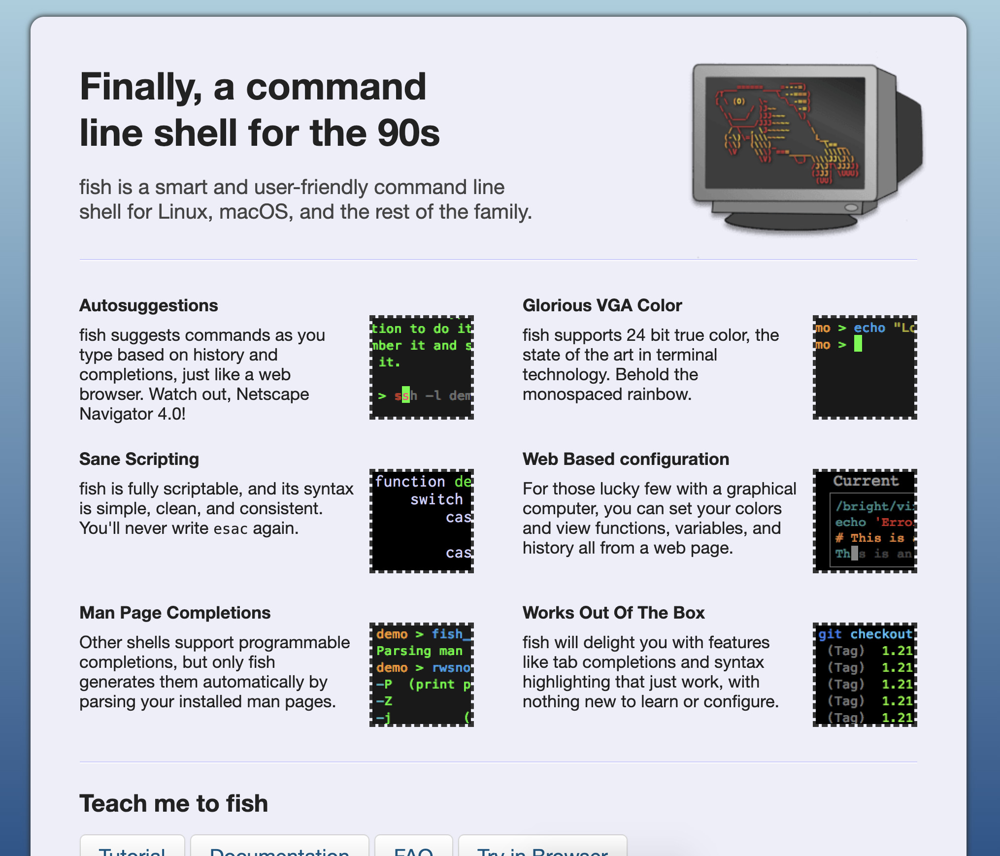
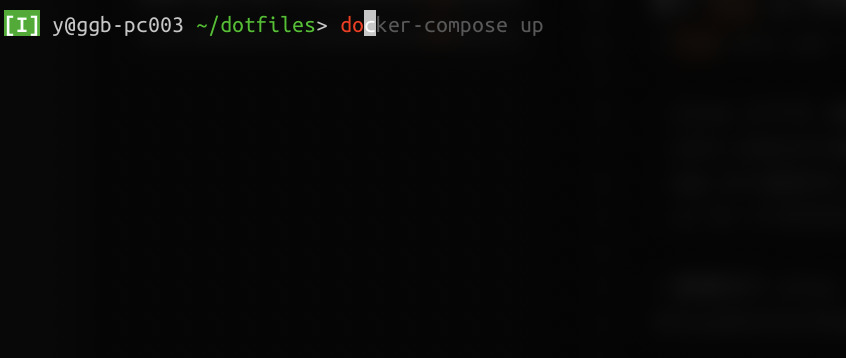
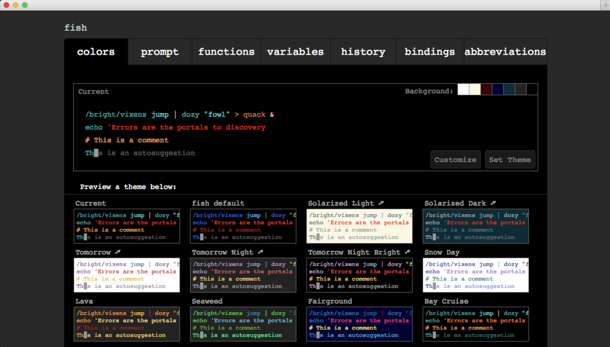
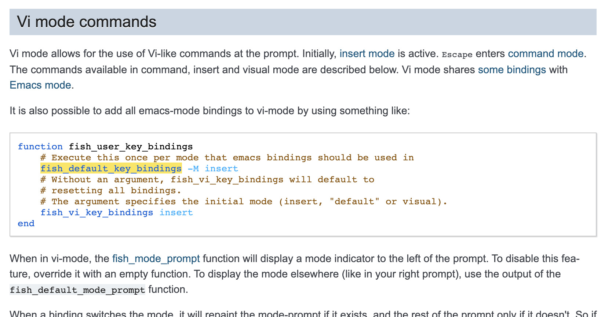
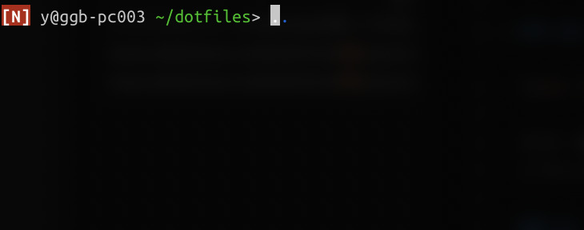
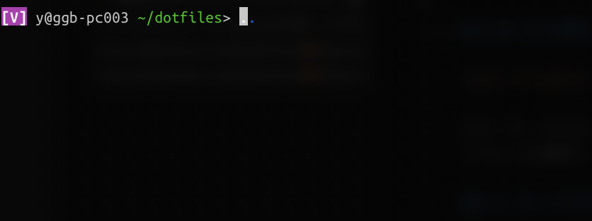
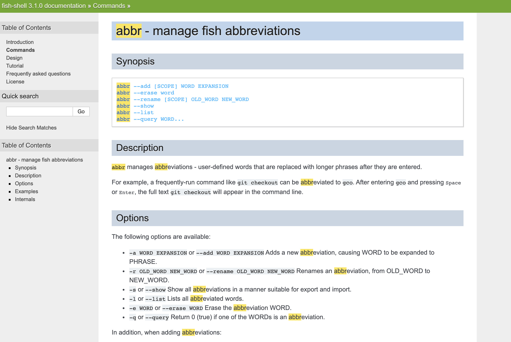
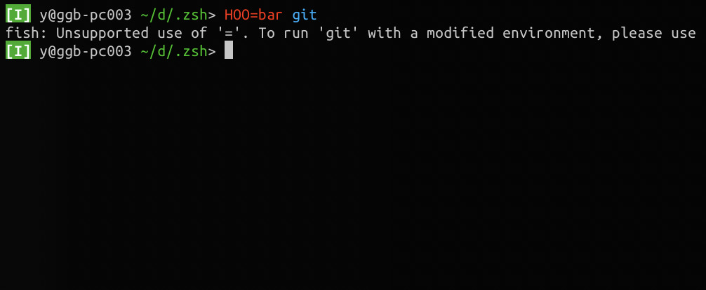
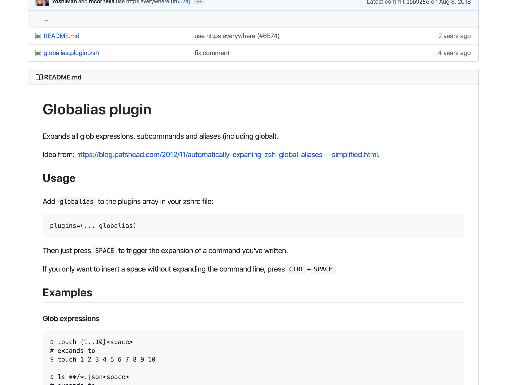

シェルで alias を設定するときは abbr の方が良い、という思想を学んだ話
この記事は書かれてから1年以上が経過しており、最新の情報とは異なる可能性があります
つい最近、長らく使っていた fish から、再び zsh への改宗を果たしました。 Bye bye, fish! 🐟
こんな感じの遍歴です。
- bash
- tcsh
- zsh
- fish
- zsh <= いまここ
前半の方（bash とか tcsh とか）はそもそもコマンド覚えたりするので精一杯だったんですけど、 後半になるに連れて（zsh とか fish とか）設計思想に触れて考えたりすることも増えてきて、 fish は不満はあれども、学びも多かった ので、その学びをこちらにメモしておければなと思いました。
fish の良いなと思ったところ

ちなみに fish というのは fish shell のことです。
特に使っていて、魚を感じるコンテキストはなかったので、単に後ろに sh がついてる単語を探しただけかもしれませんw
一部でそれなりに使われてる、といった温度感でしょうか？ （たまに使ってる人に会う、くらい・・・）
僕が fish 良いなと思ったところ は以下あたりです。
- alias よりも abbr (abbreviation) 、別名よりも略語を重視する（後述）
- auto completion 、何も設定してなくても自動補完される、 設定頑張らなくていい
- Web から設定をいじることができる、 localhost が立ち上がる
- vi モードが分かりやすい
（fish から zsh への改宗を果たしたって書いたそばから、良いところをまとめるのもどうかと思いますがw）
一番最初の alias よりも abbr ってやつが、今日書きたいやつなので、 それ以外のものを先にさらっとメモ。
auto completion 、何も設定してなくても自動補完される
おそらく history から引っ張ってくる設定が標準でされているのでしょうか？ このように薄く補完コマンドを表示してくれます。嬉しい。

これだけでも導入する価値があるのかもしれません。 楽ちん。
Web から設定をいじることができる、 localhost が立ち上がる

カラーテーマとかを選ぶのは、どちらにしろ見た目から判断するしかないので、 こういった設定しやすい画面が用意されてるのはありがたいです。
vi モードが分かりやすい
これ、もしかするとテーマによるのかもしれません。
そもそもなんですけど、シェルで vi モードを使ってる人ってどれくらいいるんでしょうね？
おそらく何も設定しなければ、 emacs のモードになってて、 僕もそこまで emacs のキーバインドに詳しいわけではありませんが、 少なくとも以下あたりは使えてるかと思います。
Ctrl + A: 行頭Ctrl + E: 行末Ctrl + W: 直前の単語削除
あー、なんか前にこの辺書いた気がするけど、やっぱ別記事で書いてたわ・・・。
とはいえですよ？やっぱりモードのあるエディタのキーバインドで色々いじった方が、 当然コマンド実行までの速度は断然上なんですよ。
そこでこれ。

http://fishshell.com/docs/current/index.html?highlight=fish_default_key_bindings#command-line-editor
良いですねー。
vi mode が用意されてるので、 fish 時代の時に初めてシェルスクリプトを emacs から vi キーバインドに変更したんですけど、 実際快適すぎました。 なぜもっと早く切り替えなかったんだろう。

ノーマルモードに切り替えれば、移動も同様に楽々できます。
0: 行頭$: 行末dB: 直前の単語削除（この辺は組み合わせでどうとでもできちゃう）

ビジュアルモードもあります。途中あたりのコマンドをあれこれ編集するみたいなのも簡単。
これ以上は話それちゃうのでやめますが、 vi モードはそれなりに fish でも最適化されてたよって話でした。
alias と abbr の違いから学んだ設計思想
fish に移りたての頃、 zsh で設定していた alias をそのまま持ってこようと思い、 fish でも同じく alias ができるやり方をドキュメントから探したのでした。
ちなみに、設定していた alias は概ね以下みたいなやつです。（過去の config.fish から）
# git
alias g "git"
alias ga "git add"
alias gaa "git add ."
alias gb "git branch --all"
alias gbd "git branch -d "
alias gc "git commit"
alias gca "git commit -a"
alias gco "git checkout"
alias gcom "git checkout master"
alias gcod "git checkout develop"
alias gcob "git checkout -b"
alias gre "git rebase -i"
alias gd "git diff"
alias gl "git log --graph --all --pretty=format:'%Cred%h%Creset %Cgreen(%cI) -%C(yellow)%d%Creset %s %C(bold blue)<%an>%Creset' --abbrev-commit --date=rfc2822"
alias gp "git pull"
alias gs "git status"
alias gst "git stash"
alias gf "git fetch"
# docker
alias d "docker"
alias dc "docker container" # override original dc command
alias dls 'docker container ls'
alias di "docker image"
alias dils "docker image ls"
alias dn "docker network"
alias dnls "docker network ls"
alias dv "docker volume"
alias dvls "docker volume ls"
alias dcom "docker-compose"
alias drun "docker run"
alias dex "docker exec"
alias dpull "docker pull"
あっ、もちろん全部は使ってないんですけど、
概ね g から始まるものは git のもの、 d から始まるものは docker のもの、
って感じになってますね。
なんですけど、どうも他の方の設定とかドキュメントとか色々調べてみるうちに、 fish では alias よりも abbr (abbreviation) の方を推奨してそうな雰囲気を感じます。

http://fishshell.com/docs/current/cmds/abbr.html
fish に乗り換えてからしばらくは、普通に alias を使っていたんですが、 abbr に以下のメリットがあることに段々気づいていきます。
abbr を使うメリット
改めて alias と abbr の違いについてまとめてみます。
- alias はあくまで別の名前をつけるだけ
- abbr は略語であり、略してない正式名称がある、 実行時にコマンドが展開される
fish だと、 alias を普通に設定するだけで、 もしかすると abbr のように動いてくれるかもしれません。 fish の細かな挙動までは把握できてませんが、世間一般の alias と abbr の違いについては、 上記で概ね問題ないかと思います。
じゃあ、実行時に略語が展開されるとどのようなメリットがあるかというと・・・
- 画面共有などしたときに入力したコマンドが、 他人から見て分かる
- 勉強会などで画面を見せながらやったとき、自分が入力しているコマンドが 他人から見て分かる
- history に正式名称のコマンドが残るので、後から探しやすい
そうなんですよね。 他人から見て何やってるかが分かる っていうのが大きな違いとして出てきます。 過去にやったことを未来の自分が探すって考えた時も、結局未来の自分は他人なので、 history 周りの話も結局他人から分かりやすくなってる、ってところに通ずると思います。
他人から見て何やってるか分かる！
他人から見て何やってるか分かる！というのが、 昨今の時代になって、よりメリットを増してきてるように思うのです。
以下、 fish じゃなくて設定後の zsh の例ですが、 こうやって画面キャプチャしてみると大きな違いがあります。
こちらは alias のみの例です。
git status を gst で alias しています。
そのまま入力された alias が表示されたまま、 alias 先として設定されているコマンドが実行されているのが分かります。
このように一般的で推測可能な alias であればまだ問題は少ないかもしれませんが、 当然知らない人も一定いるでしょうし、そもそも一般的で無かったら知りようがありません。
一方で abbr が設定されているのがこちら。
gst と入力した後、実行時に git status に展開されているのが分かります。
そう、 他人から見て何やってるか分かります！
fish を徐々に使うに連れて、他人に見せたときのメリットが思った以上に大きいなって思うようになりました。
- auto completion でどんなコマンドに補完されようとしてるかが、他人から見て分かる
- 短縮されたコマンドを入力してもすぐ展開される、他人から見て分かる
これ、今のリモートが加速されつつある時代に、画面見せながら相談したりすることもぐっと増えるでしょうから、 他人から見て分かるっていうの、ものすごく重要なんじゃないかなって思うのです。
alias よりも abbr を重視する姿勢 だったり、 設定頑張らなくてもすぐ使える便利さ だったり、 fish 、なんて良いシェル・・・！
fish のただ唯一の欠点
もうここからは半分余談なんですけど、 「じゃあなんで fish やめたんだよ」 って話になりますよね？
理由はこれです。

このように、 一時的に環境変数を渡す標準のやり方が通用しない のでした。
みんなが毎回間違えすぎるのか、コマンドに
fish: Unsupported use of '='. To run 'git' with a modified environment, please use 'env HOO=bar git…'
みたいに出るようになったようですが、それでも毎回ここでストップさせられるんですよ・・・。 （つらい）
セットアップのドキュメントだったり、様々なところでシェルスクリプトの入力ってあるじゃないですか。 そこで非標準にこのまま乗っかってて良いものか・・・？ってずっと悩ましかったです。
やはりこの先の変化に対応するには、 常にレールに乗った状態でないといけない 、と思っていたので、 この非標準を避けられない状況はよろしくないなと。
これが不満の9割で、これが問題になってなかったらこのまま fish を使い続けていたと思います。 ああ〜もったいない・・・。
zsh への乗り換え（余談）
以下の方針で乗り換えました。
- 徹底的にレールに乗る、設定頑張らない
- oh-my-zsh とか、プラグインを必要十分で入れる
- vi-mode とかもプラグインある
- alias よりも abbr
- fish から学ぶ
- oh-my-zsh では
globaliasというプラグインがある
少しだけカスタマイズしたところがあったので、そこだけログに残しておきたいと思います。

ここに書いてあるのですが、 zsh で abbr 的なことをやろうとすると、 スペースを入力して展開する必要があって、打ち忘れたら展開されなくてつらいです。
そもそも人間の打ち忘れがないよう精神論でなんとかするのは、エンジニアリングでも何でもないので、 以下のように設定しました。
my_globalias() {
zle _expand_alias
zle expand-word
zle accept-line
}
zle -N my_globalias
bindkey -M emacs "^m" my_globalias
bindkey -M viins "^m" my_globalias
実際、 globalias に書いてあるものと概ね近いのですが、
bindkey でスペースを hook するのではなく、エンターキーを hook して、
そのまま zle で accept-line しちゃってます。
上の abbr の動画の例は、これの設定をした zsh の例だったりします。
まとめ
今回 fish を使ってみて思ったんですけど、とりあえず使ってみて思想を学びとるの、けっこう大事かなと思いました。
良いプロダクトはそれなりにきちんとした設計思想に沿って作られていることが多いので、 その設計思想を使いながら学び取るのも良いなあと思いました。 今回、結果的に fish から zsh へ移行しましたけど、実際 zsh の設定も fish の経験が生きてますし、 そんなに設定に時間かからずに概ね同じ状態が保ててます。やったー！
この記事は書かれてから1年以上が経過しており、最新の情報とは異なる可能性があります